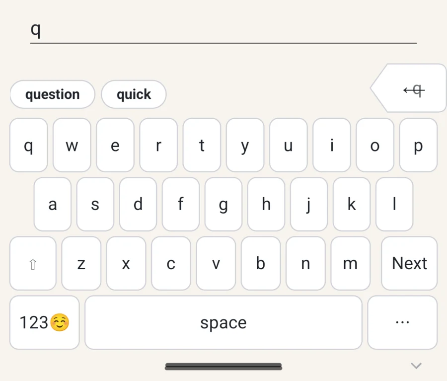

Prose surface
Stable QWERTY, grouped suggestions, a wide spacebar, outboard Backspace, and the lower-right keyboard menu.
Android keyboard in progress
A keyboard for prose, terminals, private fields, and the places where wrong help costs more than no help.
Tact treats the field as the contract. A message, password prompt, URL bar, SSH session, and split-screen workflow should not receive the same keyboard behavior.
Current emulator evidence
These are cropped from the Android emulator smoke artifacts. They are not final marketing renders, but they show the shape of the implemented keyboard work so far.

Stable QWERTY, grouped suggestions, a wide spacebar, outboard Backspace, and the lower-right keyboard menu.
Literal command entry with visible Esc, Tab, modifiers, command symbols, and a real Enter key.
The visible keys are landmarks. The hit model underneath can use larger, overlapping fields without moving letters around.
Product stance
The public story is simple: Tact should help when the field calls for help, stay literal when precision matters, and make risky state visible without turning the keyboard into chrome.
Spatial memory is valuable. Tact adapts touch interpretation and policy underneath a stable visual layout.
Backspace, Send, Enter, and the keyboard menu occupy predictable homes so accidental taps are easier to avoid.
Password, OTP, card, and terminal contexts suppress learning, previews, voice, and AI where those behaviors would be wrong.
Corrections, voice, and AI rewrites should be deliberate controls with undo paths, not ambient behavior that changes text silently.
Build status
The keyboard is being built as a native Android IME. The current work is focused on installability, field policy, keyboard rendering, touch geometry, correction behavior, and terminal-specific safety.